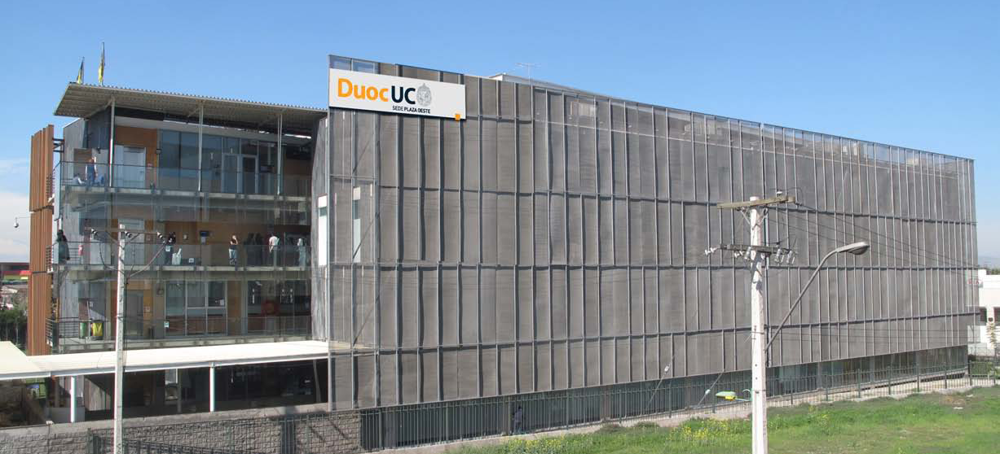

Sedes / Plaza Oeste



Descripción
Sede Plaza Oeste Duoc UC responde a la creciente necesidad de personal calificado y capaz de interactuar con las tecnologías que demanda la industria en la implementación de nuevos y más complejos procesos de manufactura que permitirán agregar un mayor valor a la producción nacional y contribuirán al desarrollo económico del país. Este centro, ofrece las mejores alternativas formativas y tecnológicas que permiten incrementar los niveles de eficiencia y productividad de los técnicos y profesionales de la industria nacional. Con un enfoque basado en competencias laborales, aborda las necesidades del sector, cubriendo una amplia gama de especializaciones y considerando para ello desde títulos profesionales hasta programas especiales de capacitación con financiamiento Sence. Inserto en un importante polo de desarrollo industrial y con excelentes alternativas de acceso, este proyecto permite atender tanto las necesidades de capacitación y desarrollo profesional de las diversas empresas de la zona, como a los más de 13.000 alumnos que anualmente egresan de la enseñanza media en el sector sur Poniente de Santiago. P: Presenciales PEV: Programa Ejecutivo Vespertino
Carreras que se imparten
Diseño
Diseño Gráfico (Diurno)Diseño Industrial (Diurno)
Administración y Negocios
Administración de Empresas Mención Marketing (Diurno)Administración de Empresas Mención Marketing Pev (Vespertino)
Administración de Recursos Humanos (Diurno)
Administración Financiera Pev (Vespertino)
Auditoría (Vespertino)
Comercio Exterior (Vespertino)
Contabilidad General M Legislación Tributaria (Diurno/Vespertino)
Ingeniería en Administración (Diurno/Vespertino)
Ingeniería en Administración de Recursos Humanos (Diurno)
Ingeniería en Marketing (Diurno)
Técnico en Gestión Logística Pev (Vespertino)
Técnico Jurídico (Diurno)
Informática y Telecomunicaciones
Administración de Redes Computacionales (Diurno/Vespertino)Analista Programador Computacional (Diurno/Vespertino)
Ingeniería en Conectividad y Redes (Diurno/Vespertino)
Ingeniería en Informática (Diurno/Vespertino)
Técnico en Telecomunicaciones (Diurno/Vespertino)